The music player
that actually gets you.
Local files, YouTube playlists and Spotify imports in one gorgeous desktop app, with plugins that search anime and movies. Play one song and let Seeky do the rest.
Windows · macOS · Linux
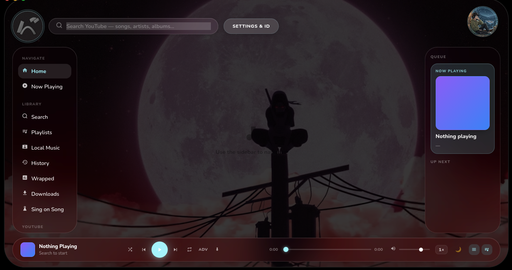
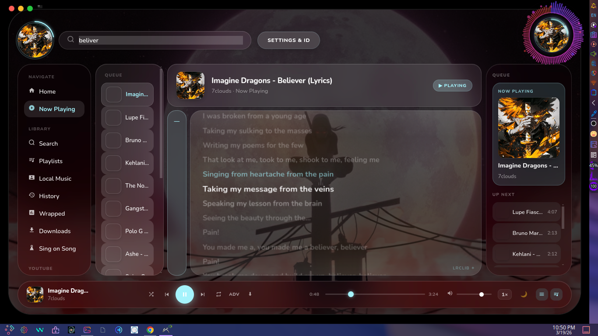
Press play once.
Never curate again.
Pick a single song and the feed generator builds an endless queue from it. No playlists to make, no decisions to keep making.
Everything in one place.
Most music apps make you pick a lane. Seeky does local and streaming, free, with your data staying on your machine.
Seeky now has plugins.
More than a music player. Plugins add new abilities to the app, like searching anime and movies.
🍿 Anime & movie search
Search anime and movies right inside Seeky.🎮 Gamer Mode
Built in. Auto-ducks your music when game audio kicks in.🧩 More on the way
A plugin marketplace is on the roadmap.11 hand-crafted themes.
This whole page runs on Seeky's real theme tokens. Pick one and watch it change, just like in the app.
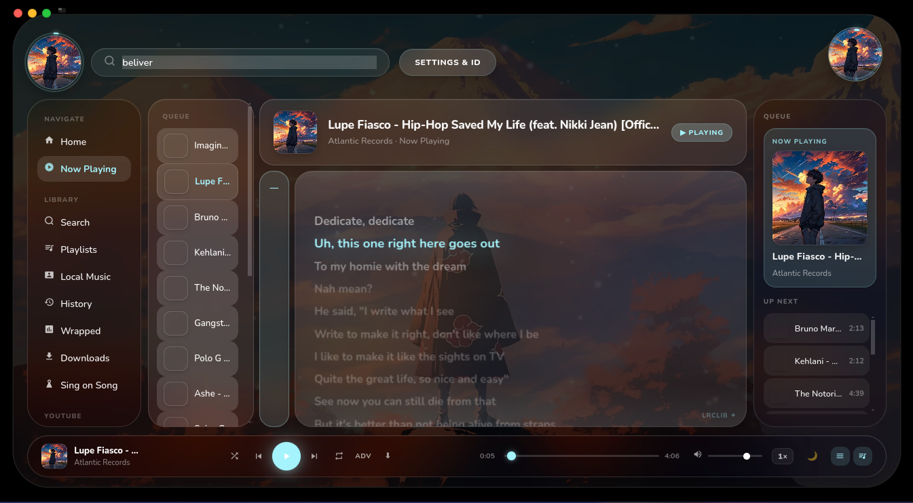
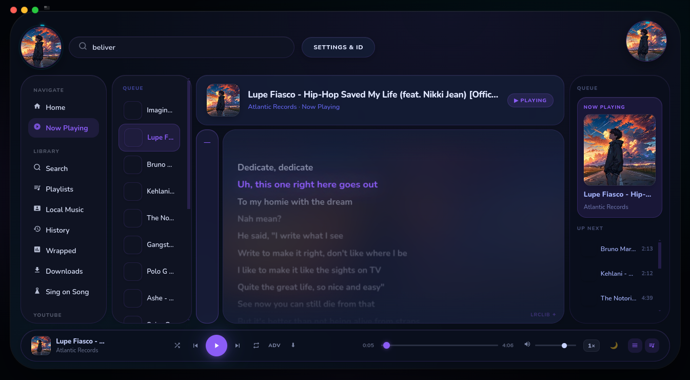
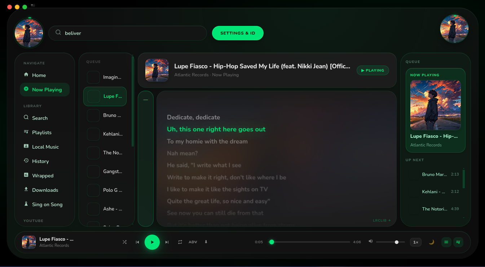
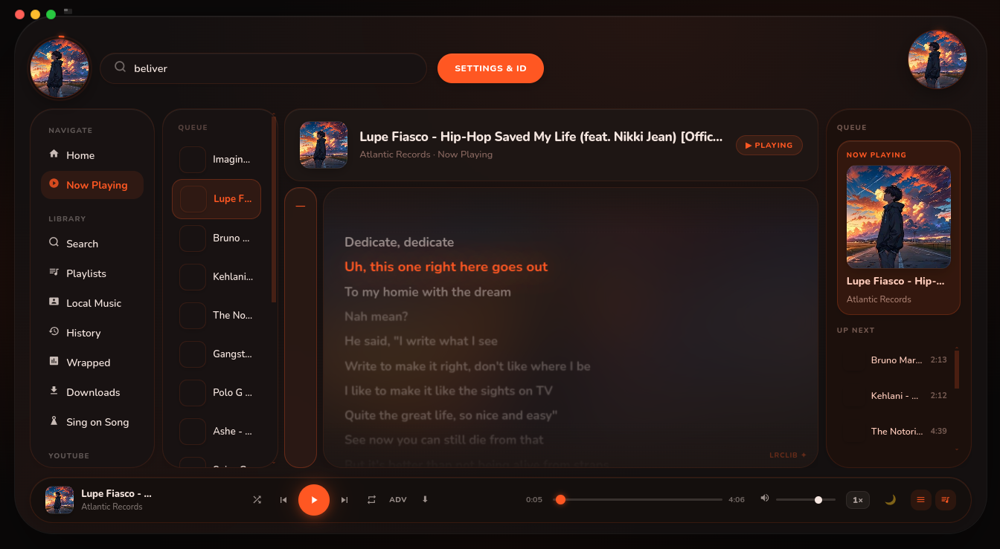
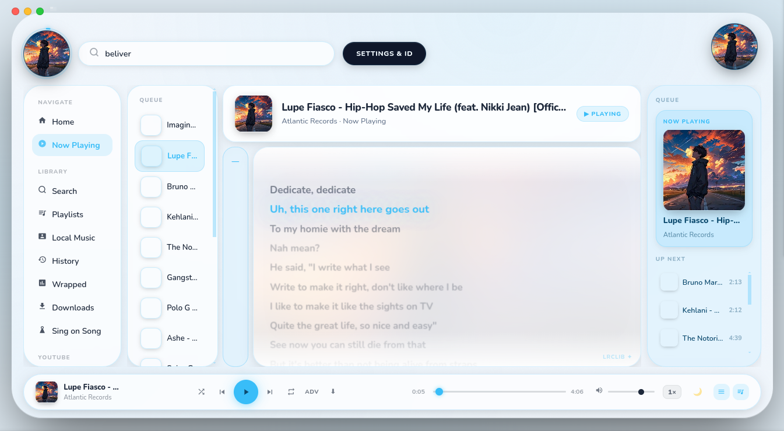
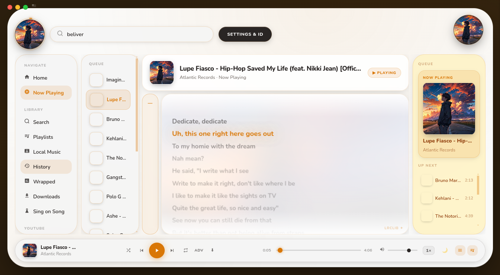
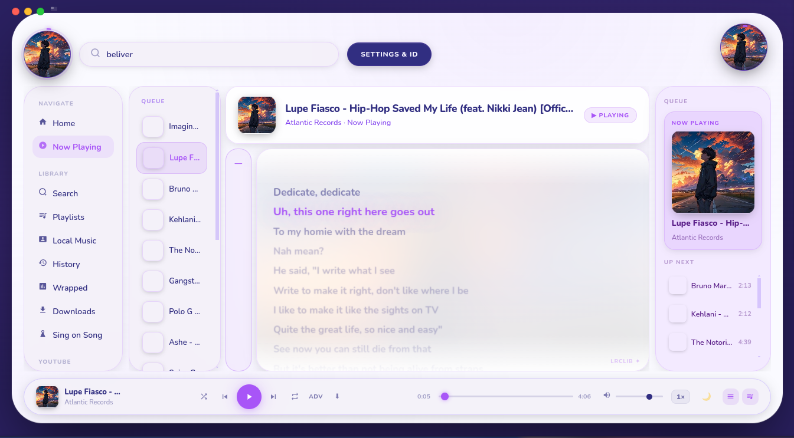
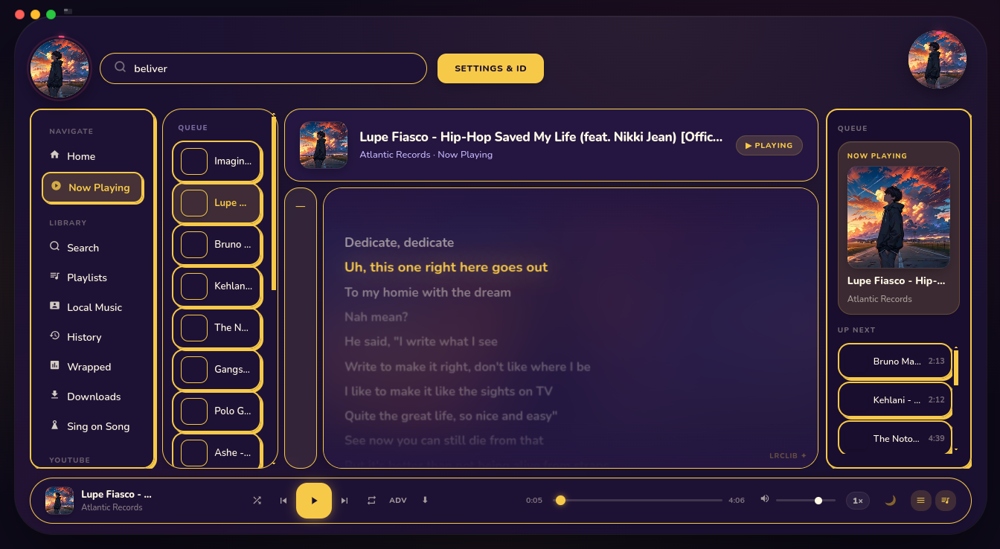
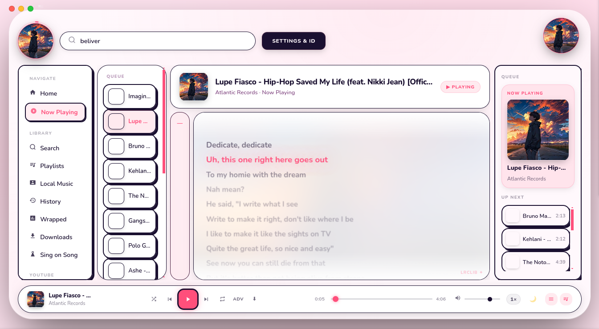
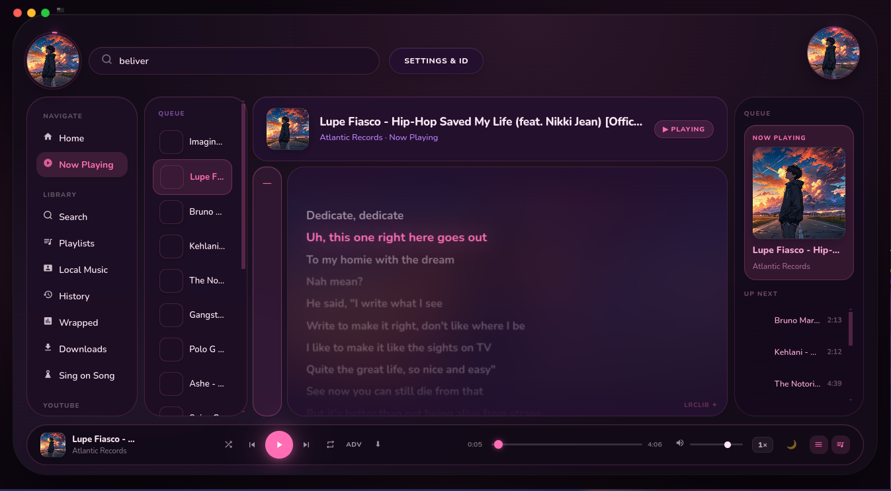
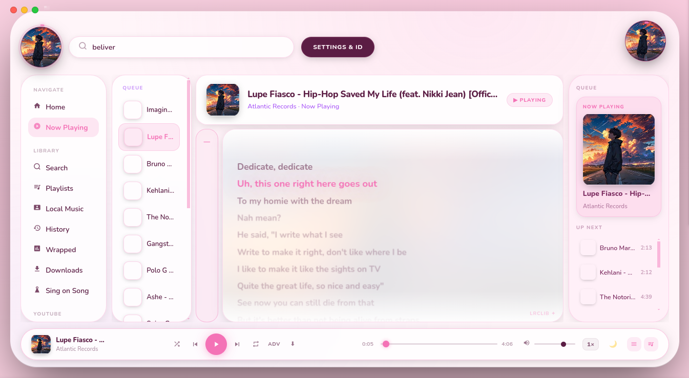
Up and running in a minute.
Grab the latest build from Releases. Seeky updates itself silently after that.
🪟 Windows
- Download the
.exe - Run it. Done.
🍎 macOS
- Download the
.dmg - Drag to Applications
- First launch: right-click → Open
🐧 Linux
- AppImage:
chmod +x, then run - Or
dpkg -ithe.deb
What's coming next.
Have an idea? Tell us on Discord or open an issue.
Good questions.
Is it really free?
Yes. No ads, no subscription, and no account needed for core features.
Does it work offline?
Fully, for local files. YouTube playback and Spotify import need internet.
Is my data private?
Seeky doesn't send your library or listening data anywhere. Song ID and Discord RPC only activate when you enable them.
Where's the source code?
Seeky is currently closed-source. If the repo reaches 2,000 stars, the full source code, including the Smart Feed generator, will be open-sourced. Plugins are supported today, and a public plugin API and community extensions are planned.
Made with ❤️ and way too many late nights. · Report a bug · Releases
Seeky is not affiliated with Spotify, YouTube, Discord, or ACRCloud.